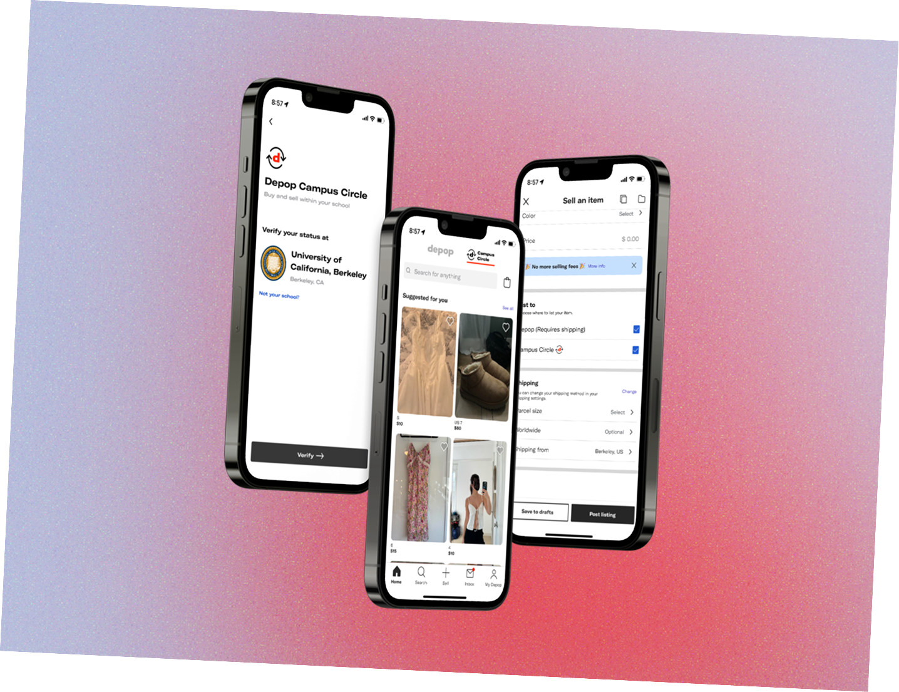

About Andie
Hi! I am a fourth-year Cognitive Science major, minoring in Data Science. I am passionate about making things, and am endlessly picking up hobbies that always lead back to making something, whether that be art, writing, or other. I am very excited to learn front-end web development, as I think it will sharpen my ability to design accessible and intuitive products, and build a stronger foundation for my understanding of tech as an industry.
Outside of class, you can find me hiking, working out, or finding new places to explore in the Bay Area!
Skills & Interests
- Languages: Filipino, English, Spanish
- Skills: Writing, Graphic Design and Visual Arts, Data Analytics
- Technical/software: Python, R; Adobe Creative Suite, Figma, Procreate
Projects
Product Design
I am a consultant for Berkeley Innovation, a human-centered design consultancy in Berkeley. In this role, I have conducted extensive user research through surveys, interviews, ethnographic studies, and more. Alongside my project teams, we have also created high-fidelity prototypes and delivered comprehensive synthesis of the insights derived from our research.
Visual Arts
In my free time, I love creating art of different media. I primarily paint with arcylic and watercolor now, but I also love ink prints, colored pencil, graphite, and learning new skills!